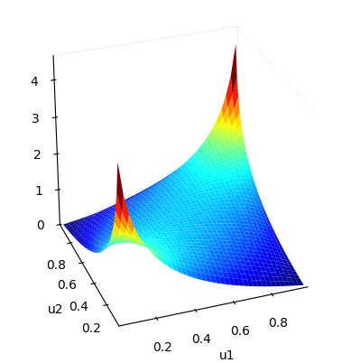
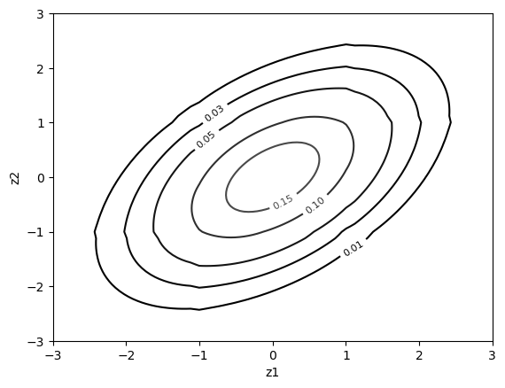
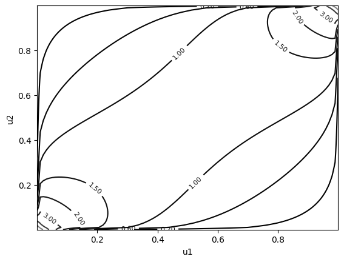

Introduction to the bivariate copula (Bicop) API
Import the library
[1]:
import pyvinecopulib as pv
import numpy as np
Create an independence bivariate copula
The default constructor of the Bicop class creates an independence bivariate copula.
[2]:
pv.Bicop()
[2]:
<pyvinecopulib.Bicop> Bivariate copula:
family = Independence
rotation = 0
var_types = c,c
Create and plot a Gaussian copula
See help(pv.BicopFamily) for the available families
[3]:
cop = pv.Bicop(family=pv.gaussian, parameters=np.array([[0.5]]))
print(cop)
cop.plot() # surface plot of copula density
cop.plot(type="contour", margin_type="norm") # contour plot with normal margins
cop.plot(type="contour", margin_type="unif") # contour plot of copula density
<pyvinecopulib.Bicop> Bivariate copula:
family = Gaussian
rotation = 0
var_types = c,c
parameters = 0.5



Some other families
A 90 degrees rotated Clayon copula with parameter = 3
A t copula with correlation of 0.5 and 4 degrees of freedom and showcase some methods
[4]:
print(pv.Bicop(family=pv.clayton, rotation=90, parameters=np.array([[3.0]])))
cop = pv.Bicop(family=pv.student, parameters=np.array([[0.5], [4]]))
print(cop)
u = cop.simulate(n=10, seeds=[1, 2, 3])
fcts = [
cop.pdf,
cop.cdf,
cop.hfunc1,
cop.hfunc2,
cop.hinv1,
cop.hinv2,
cop.loglik,
cop.aic,
cop.bic,
]
[f(u) for f in fcts]
<pyvinecopulib.Bicop> Bivariate copula:
family = Clayton
rotation = 90
var_types = c,c
parameters = 3
<pyvinecopulib.Bicop> Bivariate copula:
family = Student
rotation = 0
var_types = c,c
parameters = 0.5
4
[4]:
[array([1.28047174, 1.58894473, 1.69217442, 1.40160547, 1.17446536,
0.96780094, 8.19750257, 1.32347107, 1.66596506, 2.07799487]),
array([0.2750684 , 0.02106385, 0.07488511, 0.70780857, 0.33949178,
0.24858048, 0.97062947, 0.63834876, 0.08386428, 0.04462121]),
array([0.55248667, 0.03952828, 0.36602719, 0.48023317, 0.3370985 ,
0.19787956, 0.76550606, 0.85523898, 0.24959629, 0.17627362]),
array([0.37503714, 0.54267378, 0.21210291, 0.89486116, 0.69088997,
0.76006434, 0.89560217, 0.46993889, 0.3418731 , 0.32312404]),
array([0.44025059, 0.02898393, 0.11295503, 0.89143942, 0.50405325,
0.40079956, 0.99794745, 0.85485225, 0.12284869, 0.056674 ]),
array([0.41647535, 0.02999122, 0.10770379, 0.90572466, 0.55533854,
0.49348202, 0.99776998, 0.83131508, 0.12656995, 0.05818589]),
5.327910944678247,
-6.655821889356494,
-6.050651703368402]
Different ways to fit a copula…
[5]:
u = cop.simulate(n=1000, seeds=[1, 2, 3])
# Create a new object an sets its parameters by fitting afterwards
cop2 = pv.Bicop(pv.student)
cop2.fit(data=u)
print(cop2)
# Otherwise, define first an object to control the fits:
# - pv.FitControlsBicop objects store the controls
# - here, we only restrict the parametric family
# - see help(pv.FitControlsBicop) for more details
# Then, create a copula from the data
controls = pv.FitControlsBicop(family_set=[pv.student])
print(controls)
cop3 = pv.Bicop.from_data(data=u, controls=controls)
print(cop3)
<pyvinecopulib.Bicop> Bivariate copula:
family = Student
rotation = 0
var_types = c,c
parameters = 0.48
3.7
<pyvinecopulib.FitControlsBicop>
Family set: Student
Parametric method: mle
Nonparametric method: constant
Nonparametric multiplier: 1
Weights: no
Selection criterion: bic
Preselect families: yes
mBIC prior probability: 0.9
Number of threads: 1
<pyvinecopulib.Bicop> Bivariate copula:
family = Student
rotation = 0
var_types = c,c
parameters = 0.48
3.7
Similarly, when the family is unkown, there are two ways to also do model selection…
[6]:
# Create a new object an selects both its family and parameters afterwards
cop4 = pv.Bicop()
cop4.select(data=u)
print(cop4)
# Or create directly from data
cop5 = pv.Bicop.from_data(data=u)
print(cop5)
<pyvinecopulib.Bicop> Bivariate copula:
family = Student
rotation = 0
var_types = c,c
parameters = 0.48
3.7
<pyvinecopulib.Bicop> Bivariate copula:
family = Student
rotation = 0
var_types = c,c
parameters = 0.48
3.7